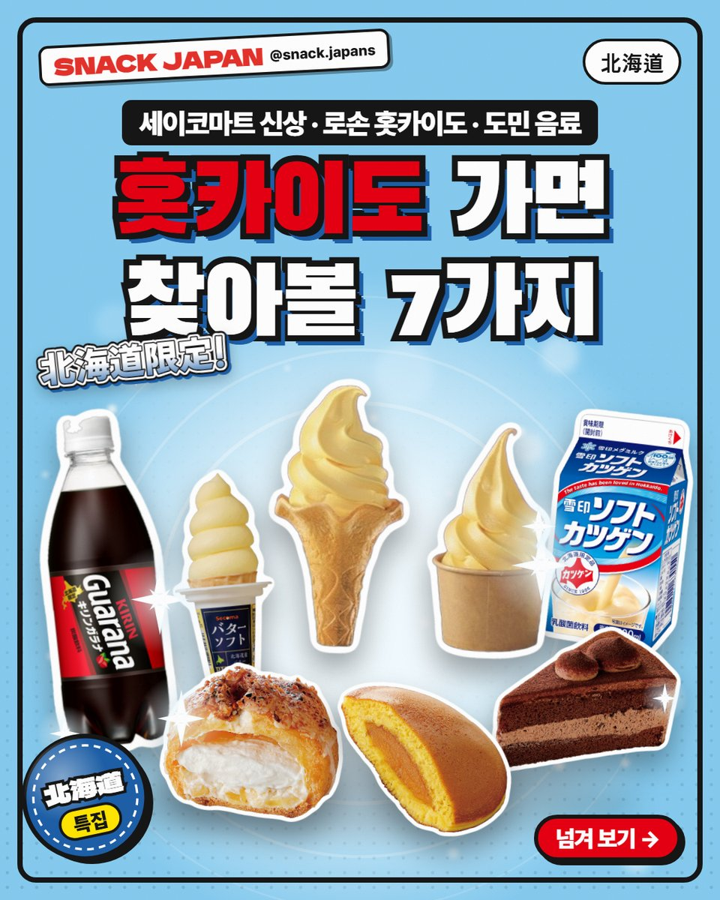
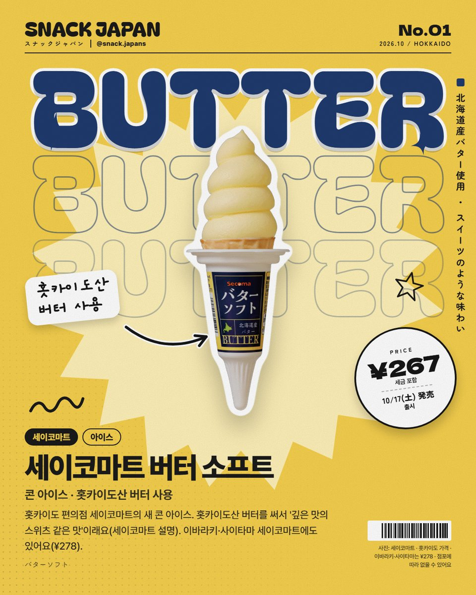
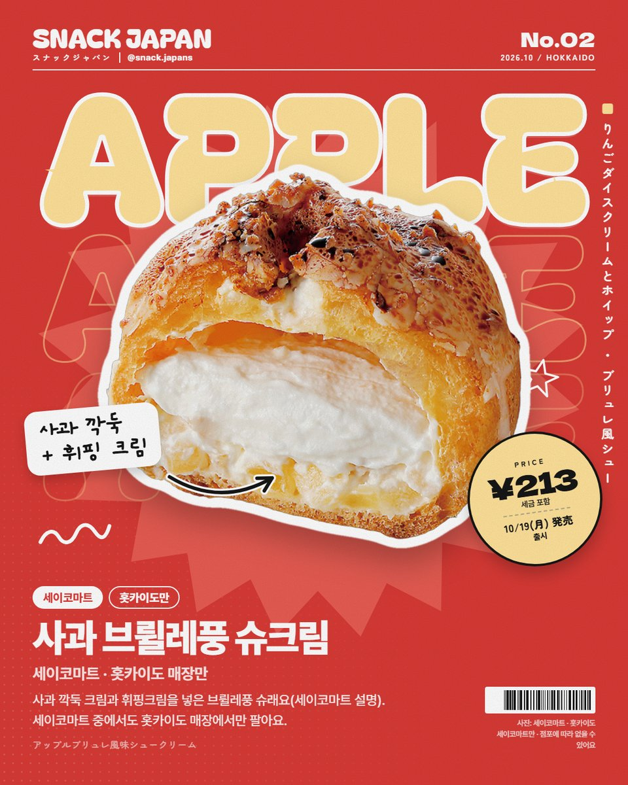
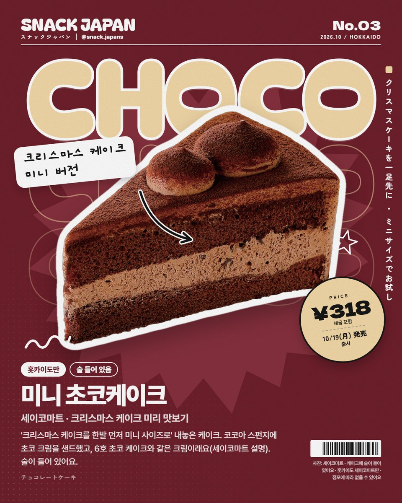
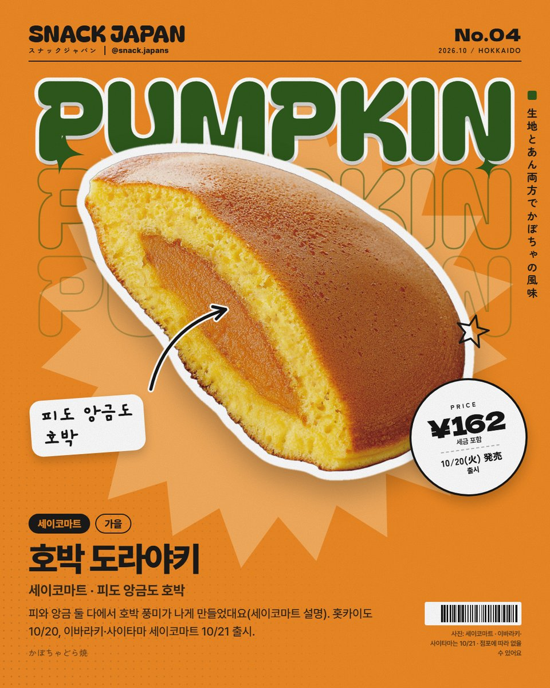
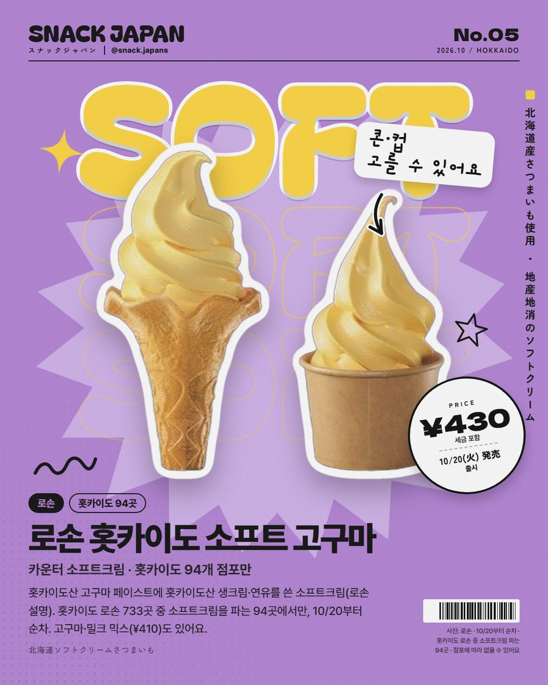
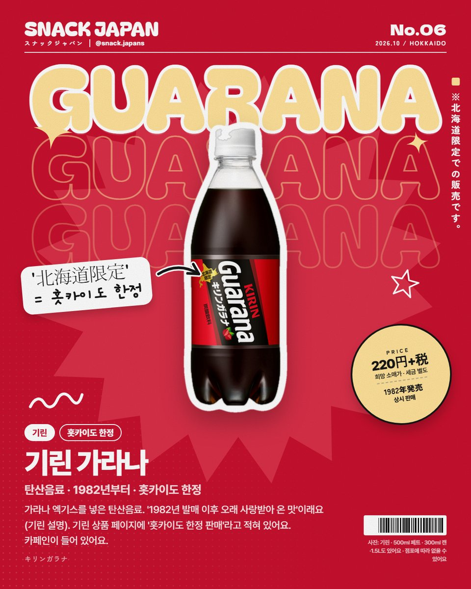
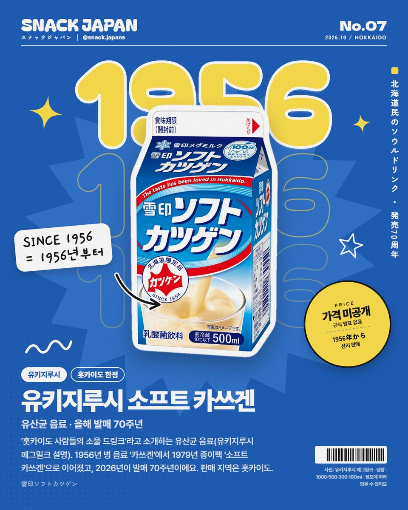
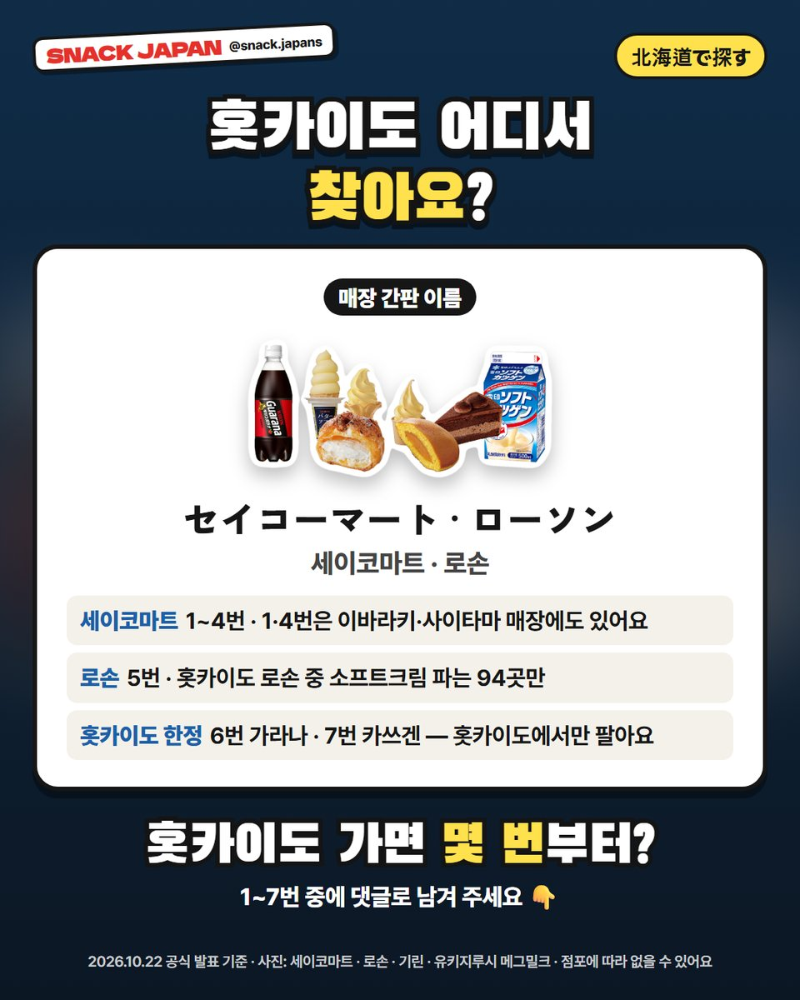

홋카이도 여행 편의점 간식 7가지, 세이코마트 신상부터 도민 음료까지
버터 소프트, 사과 브륄레 슈, 로손 고구마 소프트에 홋카이도에서만 파는 가라나·카쓰겐까지! 홋카이도 가면 찾아볼 7가지를 공식 발표로만 모았어요.
홋카이도 여행 가면
편의점부터 들르는 분 손! ❄️
홋카이도엔 홋카이도에서만 보이는 간식이 꽤 있어요.
이번 주 세이코마트 신상 4개,
로손 홋카이도 한정 소프트크림,
도민 음료 2개까지 공식 발표로만 정리했어요!

1. 세이코마트 버터 소프트
세이코마트는 홋카이도에 많은 편의점이에요.
이번 주 새로 나온 콘 아이스는
홋카이도산 버터를 써서
'깊은 맛의 스위츠 같은 맛'이래요 (세이코마트 설명).
- 출시: 10/17(토)
- 파는 곳: 세이코마트 홋카이도 매장 + 이바라키·사이타마 매장
- 일본 이름: バターソフト
- 가격: 사진 카드에 정리해 뒀어요 (홋카이도와 이바라키·사이타마 가격이 조금 달라요)

2. 세이코마트 사과 브륄레풍 슈크림
사과 깍둑 크림과 휘핑크림을 넣은
브륄레풍 슈래요 (세이코마트 설명).
- 출시: 10/19(월)
- 파는 곳: 홋카이도 세이코마트만 (이바라키·사이타마엔 없어요)
- 일본 이름: アップルブリュレ風味シュークリーム
- 가격: 사진 카드에 정리해 뒀어요

3. 세이코마트 미니 초코케이크
'크리스마스 케이크를 한발 먼저, 미니 사이즈로 맛보기'라는 케이크예요.
코코아 스펀지에 초코 크림을 샌드했고,
6호 초코 케이크와 같은 크림을 썼대요 (세이코마트 설명).
- 출시: 10/19(월)
- 파는 곳: 홋카이도 세이코마트만
- 주의: 케이크에 술이 들어 있어요 (세이코마트 표기)
- 일본 이름: チョコレートケーキ
- 가격: 사진 카드에 정리해 뒀어요

4. 세이코마트 호박 도라야키
피와 앙금 둘 다에서
호박 풍미가 나게 만들었대요 (세이코마트 설명).
- 출시: 홋카이도 10/20(화), 이바라키·사이타마 10/21(수)
- 일본 이름: かぼちゃどら焼
- 가격: 사진 카드에 정리해 뒀어요

5. 로손 홋카이도 소프트크림 고구마
카운터에서 주문을 받고 내주는 소프트크림이에요.
홋카이도산 고구마 페이스트에
홋카이도산 생크림·연유를 썼대요 (로손 설명).
- 출시: 10/20(화)부터 순차
- 파는 곳: 홋카이도 로손 733곳 중 소프트크림을 파는 94곳만
- 주요 지역: 삿포로·아사히카와·하코다테·구시로·오비히로 등 (로손 발표)
- 콘과 컵 중에 고를 수 있고, 고구마·밀크 믹스도 있어요
- 일본 이름: 北海道ソフトクリームさつまいも
- 가격: 사진 카드에 정리해 뒀어요

6. 기린 가라나
1982년에 나온 탄산음료인데,
기린 상품 페이지에 '홋카이도 한정 판매'라고 적혀 있어요.
가라나 엑기스를 넣었고,
'가라나 특유의 개성 있는 향과 탄산의 자극이 어우러진 샤프한 목 넘김'이 특징이래요 (기린 설명).
- 파는 곳: 홋카이도 한정
- 크기: 500ml 페트 (300ml 보틀캔·1.5L도 있어요)
- 원재료에 카페인이 들어 있어요
- 일본 이름: キリンガラナ
- 가격: 사진 카드에 정리해 뒀어요 (희망 소매가, 세금 별도 표기)

7. 유키지루시 소프트 카쓰겐
유키지루시 메그밀크가
'홋카이도 사람들의 소울 드링크'라고 소개하는 유산균 음료예요.
- 역사: 1938년 '活素(가쓰모토)' → 1956년 병 음료 '雪印カツゲン' → 1979년 종이팩 '소프트 카쓰겐'
- 2026년이 발매 70주년이래요 (유키지루시 메그밀크 설명)
- 파는 곳: 홋카이도 (포장에 '北海道限定品')
- 크기: 1000·500·300·180ml 종이팩, 냉장
- 일본 이름: 雪印ソフトカツゲン
- 가격: 공식 발표가 없어요

8. 어디서 사요?
- 세이코마트: 1~4번 (1·4번은 이바라키·사이타마 매장에도)
- 로손: 5번, 소프트크림 파는 홋카이도 94곳만
- 홋카이도 한정: 6번 가라나 · 7번 카쓰겐

총평
- 추천: 홋카이도 여행 가는 분, 편의점에서 그 지역에서만 파는 걸 찾는 분
- 기준: 10월 22일 각 회사 공식 발표
- 참고: 판매 점포와 재고는 매장마다 달라요
홋카이도 가면 몇 번부터 찾아볼 거예요? 🗾
여행 전에 저장해 두세요!
사진: 세이코마트 · 로손 · 기린 · 유키지루시 메그밀크